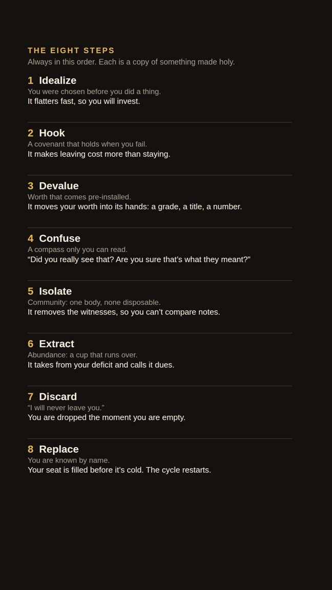
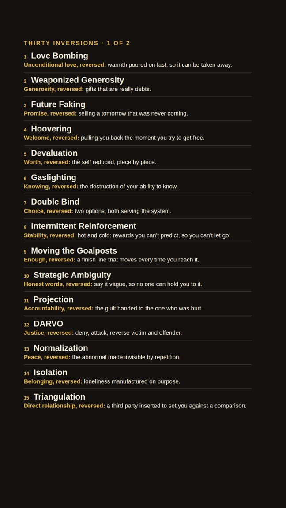
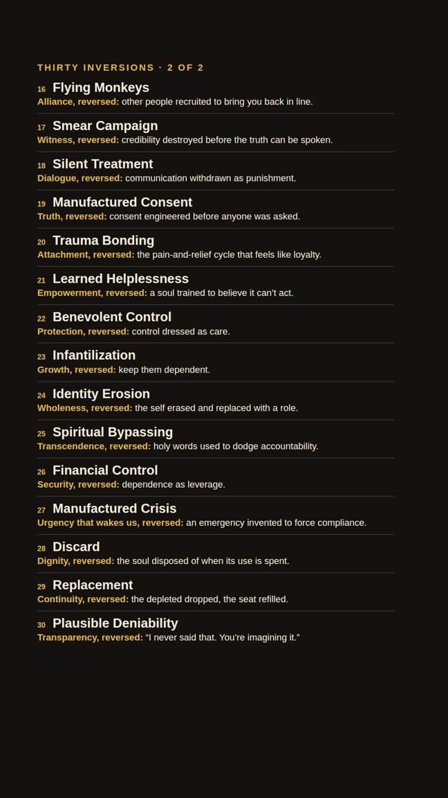
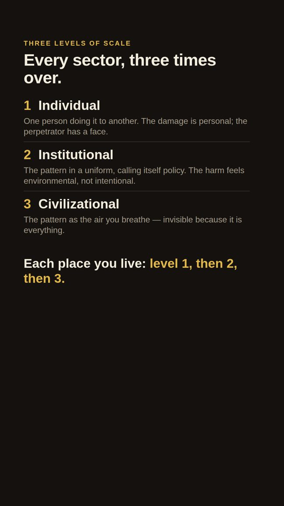

The Fractal and Fractal² · the map, and what it is for
Why I Wrote This
How one pattern became visible to me, how far it reaches, what it looks like inside one life, and what could change if enough people could see it.
Shae Stovell · Noble Father Creations · November 2026
If I told you someone was love-bombing you, you'd probably catch it.
If I told you someone was gaslighting you, you'd probably push back.
If I told you your boundaries were being tested, slowly, on purpose, you'd probably hold your line.
Probably.
But what if I didn't tell you?
What if the warmth came first, so generous that your guard didn't lower, it dissolved? And while you were still glowing from being seen for the first time in years, a picture of the future slid in, so beautiful you'd do anything to protect it. And only then did the testing begin. So small. So reasonable. So wrapped in the language of the love you'd already accepted that you never felt your line move.
You wouldn't catch it. Nobody does.
Because that's not three tactics. That's one machine.
This document is about that machine: where I found it, how big it turned out to be, what it looks like in a single life, and how it stops.
Where everything is
One story, six movements
This is written to be read in order, like a story. It is also built so you can jump to what you need.
Straight through. Blue columns show the original need. Purple columns are my spiritual reading; skip them and the structure still holds. The boxes marked “Stop and notice” can be typed into.
The whole machine on one page. Read it from the bottom up.
Movement 1
How it started
Why would anyone spend years mapping this?
1 · Why
Why these books exist
I started with one thing: the cycle people describe when they leave a manipulative relationship. Idealize, hook, devalue, confuse, isolate, extract, discard, replace. Then I kept finding it in places that had nothing to do with romance.
I found it in schools, hospitals, workplaces, churches, housing, food, media, borders and prisons. The same eight stages, the same moves, in the same order. I wrote one sector at a time, thirty of them. By the end I wasn't looking at thirty problems. I was looking at one pattern in thirty costumes.
The core idea fits in a sentence: every human need was meant to be met, and a pattern has learned to stand between people and their needs, copy the real thing, and charge for access. The original says “you are loved.” The copy says “you are loved, when you perform.” My whole body of work lives in that added condition.
I wrote it for three reasons.
To give people words for what happened to them. Most people who've been through coercive control can't name it. They only know something was taken. Naming each move turns “something is wrong with me” into “something was done to me.” That shift is where healing starts.
To show that the personal and the institutional are one pattern. When someone sees that their school, their employer and their family ran the same cycle, they stop blaming themselves for being “too sensitive” in each place separately.
To hand people tools, not only a diagnosis. Every move has a practice that restores the original. Every combination has chain breakers: specific first steps for taking it apart.
I didn't come to this as a researcher. I came to it as someone it happened to. The things that altered the course of my life, the ones I'm still unwinding years later, were never single acts. They were sequences so seamless that I experienced them as my life: as love, as loyalty, as growth. I learned to read the blueprint that had been drawn around me before I knew there was a page. Everything here comes from that, and from wanting my daughter to have the words before she needs them.
The pattern is not hidden. It is everywhere, which is why it can't be seen. A pattern that has been seen can't pretend to be the sky anymore.
One thing I want to be clear about from the start. The pattern does not need bad people. It needs structures that sit between a person and a need, with a power gap and a gatekeeper. Kind, skilled people work inside those structures every day and the cycle runs through their hands anyway. So this is not a book of villains. It is a book about a design, and designs can be changed.
Movement 2
What I noticed
What is the pattern, exactly, and why is it so hard to see?
2 · The cycle
Eight stages, and the garden and the gate
Each stage is the exact reverse of a real need being met. That precision is why it's so hard to see: it looks like the real thing until the condition appears.
Stage
What it looks and sounds like
What it actually is
The real need it copies
The spiritual principle it inverts
1. Idealize
The system finds your exact hunger and offers itself as the only thing that can fill it. “You're special. We've been waiting for you.”
Not generosity but reconnaissance: mapping what you lack.
To be seen and chosen
Election: chosen before performing
2. Hook
You give time, identity, money and trust, and each gift becomes a thread that ties you in. “Plant your roots here. Sign for four years.”
The moment leaving becomes too expensive.
Secure commitment
Covenant: unbreakable from the source's side
3. Devalue
Unconditional warmth becomes conditional. The bar rises. You can never quite earn it back. “You've changed. You're not applying yourself.”
Your worth stops being something you carry and becomes something they assign.
Worth that needn't be earned
Inherent worth: “fearfully and wonderfully made”
4. Confuse
Contradiction by design. What was true yesterday is false today. “That never happened. You misunderstood.”
A person who trusts their own perception can leave. Confusion removes that.
Trust in what you see and feel
Truth and discernment: the still, small voice
5. Isolate
Every outside source of reality is removed, one closed door at a time. “Those people don't understand us.”
No prison is needed. Every other room is made to look uninhabitable.
Connection and witnesses
Community: “not good to be alone”
6. Extract
The operational phase. The system takes what it came for. No sound. A feeling: tired in a way sleep doesn't fix.
By now there is no compass, no exit and no ally.
Fair exchange; enough
Abundance: giving from overflow
7. Discard
When you cost more than you produce, you are dropped with administrative indifference. “We wish you well in your future endeavours.”
Timed, not random. You were an operation, not a relationship.
Someone who stays
Unfailing presence: “I am with you always”
8. Replace
Your seat is filled before it cools. The newcomer gets the same words. The system hums exactly as it did before you came.
The words were written for the position, and the position is always open.
To be irreplaceable
Known by name: the shepherd leaves the 99 for the 1
The garden and the gate
This is the picture I keep coming back to. Every sector began as a garden: a place where a need was meant to be met freely. Then a gate was installed. In the old story an angel with a flaming sword guards the way back. Today the sword is an ordinary object: a billing department, a ranking, a mortgage, a login.
The need on the left is real in both paths. What differs is the condition. The top path adds one and takes a yield. The bottom path meets the need and asks nothing back.
The same cycle in the oldest story
Read the Garden of Eden, as history or as myth, and all eight stages are there. The serpent promises (“you will be like God”), hooks with a future (“your eyes will be opened”), and the first result is shame (“they knew they were naked”). Blame splits the relationships three ways, labour becomes extraction, they are expelled, and the way back is guarded. One detail matters most: the serpent's first words are “Did God really say…?” Confusion came first. A person who trusts their own perception cannot be idealized. The compass has to be broken before the journey can be redirected.
The cycle as a checklist
Idealize
Is this warmth unconditional, or aimed at my specific hunger?
Hook
What am I being asked to invest, and what would leaving cost?
Devalue
Has the warmth become conditional? Am I being told I'm not enough?
Confuse
Am I doubting my own perception? Is the information contradictory?
Isolate
Am I losing outside perspectives? Are other connections discouraged?
Extract
What is being taken: energy, money, time, health, identity?
Discard
Am I being treated as disposable now that I've slowed down?
Replace
Is the same cycle already running on someone new?
If you can tell which stage you're in, the cycle can no longer run unnoticed. Running unnoticed is the only way it works.
Stop and notice
Think of one place that welcomed you warmly and later made that warmth conditional. Which stage are you in there now?
qa38qz38
3 · Originals and inversions
The thirty techniques, and what each one copies
If the eight stages are what the pattern is, the thirty techniques are what it does. None of them is an invention. Each is a copy of something good, run backwards.
Five families of technique power the eight stages. Colours match the tables that follow.
Read each row left to right: the move, the real thing it imitates, the sacred faculty I see behind it, how the copy differs from the original, and the practice that brings the original back. The originals come from the closing chapter of The Fractal, “The Frequency.”
The inversion (technique)
The original it copies
The sacred faculty
How the copy works
The practice that restores the original
Seduction · draws you in · stages: Idealize · Hook
Love bombing
Genuine welcome
Unconditional love
Warmth delivered faster than trust can be earned. The speed is the technique.
Slow trust. Match your own pace, not theirs: “I'm going to sit with this for a few days.”
Weaponized generosity
Clean giving
Generosity
A gift recorded on a ledger you never signed, produced when you try to leave.
Ask: “Am I free not to return this?” Give one thing this week and release the tracking.
Future faking
Present inhabiting
Promise
A future vivid enough to keep you paying now, designed never to arrive.
Feet on the floor: “What is real right now?” Compare the brochure to the receipt.
Hoovering
Completed exits
Welcome
The pull back in, timed to the moment you start to leave.
The pull is a reunion response, not information. Ask what has changed besides the words.
Destabilization · breaks your footing · stages: Devalue · Confuse
Devaluation
Inherent worth
Worth
Praise slowly converted into conditions, so you work harder to earn back what was free.
Write down what is true about you that no score, review or verdict can change.
Gaslighting
Self-trust
Genuine knowing
Your experience is denied until the system becomes your only source of truth.
Keep a written record. Your body is a record too: if it tensed, something happened.
Double bind
The third option
Choice
Two choices, both of which serve the system. Every door leads to the same room.
Name it aloud: “Both options serve the system.” Then look for the third.
Intermittent reinforcement
Steady presence
Stability
Reward on an unpredictable schedule. The nervous system bonds to the uncertainty.
Name the variable reward. Then value what is steady over what is intense.
Moving the goalposts
Arrival
Trust
The standard changes each time you meet it, so you never arrive.
Write your own finish line. When you reach it, stop and let yourself arrive.
Strategic ambiguity
Plain speech
Honest communication
Language clear enough to inspire and vague enough never to commit.
Ask for specifics, in writing. Ambiguity dissolves under a direct question.
Projection
Ownership
Accountability
The system accuses you of the very thing it is doing.
Ask: “Is this truer of the accuser than of me?” Then own only what is yours.
DARVO
Holding the naming
Justice
Deny, attack, reverse victim and offender. You raise the harm and leave feeling guilty.
Keep the timeline. You don't have to win the argument to keep hold of what happened.
Normalization
Recalibration
Presence
Harm raised in steps too small to trigger alarm, until it is the background hum.
The newcomer's test: would someone seeing this for the first time call it acceptable?
The inversion (technique)
The original it copies
The sacred faculty
How the copy works
The practice that restores the original
Isolation · removes your witnesses · stages: Isolate
Isolation
Chosen solitude and genuine connection
Authentic belonging
Outside voices are removed until the system is the only world.
Keep at least one relationship the system doesn't own, and keep solitude that is chosen.
Triangulation
Direct relationship
Relationship
A third party is inserted so people compete instead of comparing notes.
Talk to the other person directly. Cut out the middleman.
Flying monkeys
Your own voice
Allies
People you love carry the system's message, so refusing it costs the relationship.
The messenger usually believes the message. Answer the source, in your own words.
Smear campaign
Your own narrative
Witness
Your credibility is damaged in advance, so your account arrives already doubted.
Tell your account plainly and consistently. Don't chase every version of the story.
Silent treatment
Responsive presence
Dialogue
Your concern is not argued with. It is simply not acknowledged.
Don't chase the silence. State your position once, in writing, and hold it.
Manufactured consent
Genuine choice
Truth
An agreement made under conditions where refusal was impossible, later cited as proof you chose.
Ask what the alternative is. No alternative means compliance, not consent.
Extraction · takes what you have · stages: Extract
Trauma bonding
Safe attachment
Attachment
The source of the hurt becomes the source of the relief, and the swing feels like devotion.
Ask: “Is this good for me, or have pain and relief become a loop?” Build one steady bond.
Learned helplessness
One completed action
Empowerment
Every attempt to act is punished until the body stops trying and calls it peace.
Finish one small action today. The body needs evidence that effort still works.
Benevolent control
Self-governance
Protection
Restriction and monitoring delivered in the language of care.
Ask who the protection serves. If it stops you leaving, it isn't protection.
Infantilization
Self-trust in capability
Growth
You are positioned as incapable, and the dependency is called expertise.
Make one decision today without asking permission. Then another.
Identity erosion
The original self
Wholeness
You walk in with a name and walk out with a label.
Keep one practice that belongs to who you were before the label.
Spiritual bypassing
Honest reckoning
Transcendence
Sacred or therapeutic language used to skip the pain and avoid accountability.
If a teaching soothes you but changes nothing, it's a bypass. Feel it, then reckon with it.
Financial control
Sovereign provision
Security
Money and debt used as a leash that makes leaving unaffordable.
Add up the cost of staying as well as leaving. Build even a small reserve: options are freedom.
Disposal · ends the cycle on you and resets it · stages: Discard · Replace
Manufactured crisis
Deliberate response
Urgency
An emergency created or inflated so you decide before you think.
When urgency appears, slow down: “If I wait 24 hours, will anyone be harmed?”
Discard
Self-retrieval
Dignity
Dropped without a conversation the moment you cost more than you produce.
Grieve the illusion, then call back the parts of yourself you gave away to stay.
Replacement
Irreplaceability
Renewal
Your seat is filled before it cools: proof the warmth was for the position.
A function can be replaced. A person cannot. You were never the function.
Plausible deniability
Witnessing
Freedom
Harm structured so that no one can be shown to have decided it.
Document, date and save. Deniability depends on there being no witness. Be the witness.
How to tell the original from the copy
Across all thirty, the copy differs from the original in the same four ways. The copy is fast where the original is patient. It is conditional where the original is free. It keeps a ledger where the original lets go. And it needs you not to check, where the original is comfortable being examined. Those four tests work on a person, a program or a policy.
The same techniques, turned inward
The hardest chapter I wrote is “The Mirror.” It runs all thirty techniques on the self: self-gaslighting (“it wasn't that bad”), self-devaluation, moving your own goalposts, discarding the parts of you that didn't fit. These are habits learned from the systems around us, now running without anyone else in the room. The inner critic is a committee of old voices (a parent, a teacher, an ex, a culture) that was never elected and always votes against your freedom. Each inward technique ends with an honest version: what to do instead.
4 · What was there first
The thirty original impulses
Before the cycle there was something else. Every sector I've written began with a real human impulse: born into every body, needing no permission, and not for sale. The cycle didn't create any of them. It found each one, built a system around it, and became the gatekeeper.
Read these slowly. Not as information. As recognition. Your body will tell you which ones it remembers.
1The sacred
Before the building and the doctrine there was the encounter itself: the edge of the ocean, the silence in the forest, a newborn's eyes. It needs only your attention.
Captured by: Religion
2Deciding together
Before the party there was the circle where everyone spoke. The impulse to govern is not the impulse to control. It is the impulse to take part.
Captured by: Politics
3Bearing witness
Before the feed there was the person who saw something and said so. Not content. Testimony.
Captured by: Media
4Asking why
The child on the floor staring at a bug. The curiosity was never for something. The curiosity was the thing.
Captured by: Education
5The body healing itself
The body grew itself from one cell and has repaired itself ever since. The ache, the tiredness and the craving are messages.
Captured by: Healthcare
6Exchange and enough
The fisherman who traded fish for bread. The system was having enough, not wanting more.
Captured by: Finance
7Tools
The hand that picked up a stick to reach the fruit. A tool extends you without replacing you. The tool is for you; you are not for the tool.
Captured by: Technology
8Unconditional love
The infant's need to be held. Not because of anything done. Because I am here.
Captured by: Family
9Fairness and repair
The child who says “that's not fair” is speaking it. When harm happens, the answer should repair, not only punish.
Captured by: Legal system
10Making
Waking up and moving something from imagination into the world, for the making itself.
Captured by: Corporate work
11Protecting the vulnerable
Stepping between the harm and the harmed. Not the weapon or the flag. The willingness.
Captured by: Military
12Expression
The song that wasn't written for a label. Making the inside visible. The audience was always optional.
Captured by: Entertainment
13The wound healing
A wound moves toward closing the way water moves toward the sea, at its own pace.
Captured by: Wellness
14Nourishment
The body said “I need” and the earth said “here.” Food as a relationship, not a product.
Captured by: Food
15Rest
Rest was never a reward. It is as non-negotiable as a heartbeat. The body doesn't earn the right to beat.
Captured by: Housing
16Joy in motion
The child running in circles for no reason. Moving means: I am alive.
Captured by: Sports
17Understanding
Looking at the sky and asking why it's blue. The willingness to not know is the door every real answer came through.
Captured by: Science
18Helping
The neighbour whose house burned got the spare room. Help as a reflex, hand to hand.
Captured by: Nonprofits
19Wholeness
The body arrived complete. It was never the “before” in a before-and-after.
Captured by: Beauty
20Being known
Not seen. Known. Someone entering the room you don't show anyone, and staying.
Captured by: Dating
21A private inner life
The right to think without being watched. The last sovereign territory.
Captured by: Surveillance
22Being held and chosen
Every child needs to be chosen as a person, not processed as a case.
Captured by: Child welfare
23A peaceful ending
Dying is the body completing its work, the way an exhale completes a breath.
Captured by: Aging and death
24The living earth
We are made of it. The relationship was a conversation: here, take this; thank you, I will tend it.
Captured by: Energy and environment
25Moving freely
Walking is the first freedom the body chooses for itself. Three miles an hour is the human speed.
Captured by: Transportation
26The inner world
The landscape inside you that no one else has seen. It was yours to read before anyone offered to read it for you.
Captured by: Mental health
27Deciding what enters your body
The body has its own pharmacy and gets the first vote. Not anti-medicine. Pro-sovereignty.
Captured by: Pharmaceuticals
28Safety
The felt sense of “I am okay right now.” The shoulders dropping. It is free.
Captured by: Insurance
29Freedom after a mistake
People make mistakes. The answer is restoration: accountability, repair, and a way back.
Captured by: Incarceration
30Belonging where you stand
The earth holds every body with the same gravity. It doesn't check documents.
Captured by: Immigration
They are not thirty things. They are one thing, a human being alive, seen through thirty windows.
The cycle can capture an impulse. It cannot kill it. It can only make you forget, and the forgetting is its only real power. A person who forgets what they are will accept the cycle's version of what they are, and the cycle's version is always: not enough.
Stop and notice
Which of the thirty did your chest answer to? Which one did you lose the longest ago?
qa39qz39
5 · The sectors
Thirty sectors, and our relationship to each need
Every sector of society began with a real human impulse. Each now stands between people and that impulse. Read the third column straight down and you see the scope: no part of life is left out.
#
Sector
Our relationship with…
The original impulse
The gate that was installed
One way to reclaim it
1
Religion
the divine
The impulse toward the sacred
A man who stands between you and God and calls himself necessary
Sit in silence for ten minutes, with no app and no script.
2
Politics
power
The impulse to organize together for the common good
The highest bidder
Go to the smallest local meeting, where your voice is a voice in a room.
3
Media
reality
The impulse to share truth and bear witness
The algorithm that decides what you see
Tell one person the truth about something you saw, in person, with no agenda.
4
Education
our own mind
The child's impulse to ask why
A grade, a ranking, a student loan
Learn something that will never appear on a résumé.
5
Healthcare
our own body
The body's knowledge of how to heal itself
A billing department
Ask your body what it is telling you, and bring that into the appointment.
6
Finance
survival
The impulse to exchange, sustain and provide
A number the system assigned to you
Give or lend something without tracking it.
7
Technology
attention and identity
The impulse to extend our ability through tools
The screen that watches you back
Pick the device up, use it for the task, put it down.
8
Family
love
The need for unconditional love
Conditions where none were supposed to exist
Love one person today without a condition or a ledger.
9
Legal system
freedom and fairness
The impulse toward fairness and the repair of harm
A priced courtroom
When harm happens, ask: “What would repair look like?”
10
Corporate work
our labour
The impulse to create, contribute and collaborate
A performance review
Make something no one will pay you for.
11
Military
our sovereignty
The impulse to protect the vulnerable
A gun pointed outward while the threat is inward
Protect someone who can't repay you, with no audience.
12
Entertainment
being seen
The desire to express and be witnessed
An industry that turns expression into product
Create something and don't post it.
13
Wellness
our wound
The wound's natural movement toward healing
A price tag on the journey inward
Let something heal at its own pace, without a program.
14
Food
nourishment
The body's need for nourishment from the living earth
A price tag on what the ground grew for free
Eat one thing your great-grandmother would recognize, slowly.
15
Housing
rest
The body's need for rest and safe shelter
A mortgage
Rest today without earning it first.
#
Sector
Our relationship with…
The original impulse
The gate that was installed
One way to reclaim it
16
Sports
our physical self
The joy of the body in motion
A contract where play was supposed to be
Move without measuring.
17
Science
truth and inquiry
The need to understand reality through honest inquiry
A funding source with an agenda
Ask a question you aren't “qualified” to ask, and follow it.
18
Nonprofits
compassion
The impulse to help the suffering
An overhead budget
Help one person directly, hand to hand.
19
Beauty
self-acceptance
The body born complete and whole
The mirror replaced by a magnifying glass
Look in the mirror for what is there, not what is missing.
20
Dating
intimacy
The ache to be truly known by another
A screen between you and every face
Tell one trusted person something real and uncurated.
21
Surveillance
privacy and autonomy
The right to a private inner life
A camera called safety
Keep something to yourself. Phone in another room for an hour.
22
Child welfare
innocence
The child's need to be held and chosen
A case file where a name was supposed to be
Hold a child with both arms and your full attention.
23
Aging and death
mortality
The body's right to complete its arc in peace
A final bill
Tell someone you love how you want the end to feel.
24
Energy and environment
the living earth
The communion between the human and the living earth
A drill in the body of the planet
Put your hands in soil or your bare feet on grass.
25
Transportation
movement and access
The freedom to move through the world under your own power
A world you can't walk through
Walk somewhere you would normally drive.
26
Mental health
our inner world
The sovereignty of the inner world
A diagnosis where a witness was supposed to be
Sit with a feeling for ten minutes before you name it.
27
Pharmaceuticals
what enters our body
The body's right to decide what enters it
A patent on the molecule
Give your body a vote, and ask about alternatives. Never stop a medicine without your clinician.
28
Insurance
risk and safety
The feeling of safety that requires no purchase
A denied claim
Sit somewhere you feel safe and notice that the feeling is free.
29
Incarceration
confinement
The right to freedom and restoration even after a mistake
A cage called corrections, charged per night
Loosen one grudge. Forgiveness opens your own door.
30
Immigration
belonging and displacement
The right to belong wherever you stand on the earth
A border and a document
Stand still and feel the ground hold you, as it holds everyone.
Original impulses are from “The Frequency.” The gates are from “The Spiritual Lens,” where I call each one a flaming sword. The practices are deliberately small. None of them asks anyone to abandon a doctor, a school or a job.
A life inside the cycle
The sectors don't wait for us to choose them. They meet us in order.
From “The Pattern.” There is no age at which a person stands outside the cycle. That is why the earliest years matter most.
One ordinary day
The alarm is on the device that tracked your sleep (technology). The feed has already chosen what you see (media). Breakfast was engineered to taste like food (food). The mirror tightens your chest (beauty). You drive the car you're paying off (finance), covered by insurance you can't legally drive without. Your health cover is tied to the job, so you can't leave the job (corporate plus healthcare). Your child was graded today (education). You lie down in the house the bank owns (housing). Nothing dramatic happened. That is the point. The cycle didn't pause for a single hour, and none of it felt like a cycle.
The thirty are not thirty things. They are one thing, a human being alive, seen through thirty windows. When I group the original impulses, they fall into six roots:
Root need
Original impulses that belong to it
Sectors built on top
A body at home
To heal, eat, rest, move, be whole, decide what enters you, finish life in peace
Healthcare, Food, Housing, Sports, Beauty, Pharmaceuticals, Aging and death
A mind that knows
To ask why, to understand, to witness the truth, to own your inner world
Education, Science, Media, Mental health
A bond that holds
To be loved without earning it, to be known, to be held and chosen as a child
Family, Dating, Child welfare
A place among others
To decide together, to be treated fairly, to help, to protect, to belong where you stand
To touch the sacred, to express and be seen, to heal the wound, to be private, to belong to the earth
Religion, Entertainment, Wellness, Surveillance, Energy and environment
Movement 3
How it expanded
How big is this, and why didn't thirty turn out to be enough?
6 · The body of work
What I built, in numbers
8stages in one repeating cycle
30techniques that power it
3levels: person, institution, civilization
30sectors of life, birth to death
2,700worked examples in The Fractal (30 × 30 × 3)
335specific tactics mapped in the first full Fractal² sector
153combinations written for that sector
34religious traditions compared in The Sacred Divide
28missions in my children's book, Playground Protectors
1pattern underneath all of it
Work
What it is
The question it answers
The Fractal
30 sectors, each walked through all 30 techniques at 3 levels. Then four closing chapters: The Mirror (the pattern in yourself), The Body (in the nervous system), The Chain (across generations) and The Frequency (what survived).
Where does it run? Everywhere, and the repetition is the evidence.
Fractal²
Each sector at full resolution: 300+ named tactics, so a reader can find the exact thing that was done to them.
What exactly happens?
The Combinations
100+ per sector. How single moves chain into the compound patterns people live through, why the order matters, and how each one breaks.
How does it work on a person, and how do you get out?
The Sacred Divide
34 traditions, each examined through the same 27 sections.
How have the world's traditions named the counterfeit?
The Pattern Decoder
310 tactics in plain words, each with “Is this it?” and “What you can do,” written for someone who is hurting and unsure.
What is this, and what do I do today?
Playground Protectors
A children's book: 28 missions that teach kids to spot, name and handle “tricky” behaviour, with words to say and a clear rule for when to tell a trusted adult.
How do we give children the words before they need them?
Everything is free to read. That is deliberate: a map of how access gets gated should not have a gate on it.
7 · The fractal
Three levels, and how the pattern passes on
A fractal is a shape that repeats at every scale. This pattern does. That is why it's hard to see, and why changing it at one scale changes it at the others.
The levels nest. The person is inside the institution. The institution is inside the civilization. And the civilization's pattern is inside the person, as habits, expectations and an inner voice. The second level explains something that puzzles people: why good staff inside a system still produce harm. The design was there before they arrived.
The pattern is the same for everyone. The pressure is not. The same technique lands harder on some bodies than others, by race, class, sex, disability, age and status. The people it presses hardest are usually the people least believed when they describe it. That disbelief is the cycle too. I ask every reader to carry one question through the whole map: on whom does this land hardest, and whose account of it is most doubted?
Why the direction can reverse
The pattern came in from the outside. A civilization shaped its institutions, the institutions shaped families, families shaped children, and children grew an inner voice that carried it on. Each link is a relationship. So each link can carry something else. When one adult catches the old response and chooses differently, a child receives a signal that was never in the family line before. That child grows up needing less from the systems that feed on unmet need. This is slow, and it is real. It is the mechanism I trust most in everything I've written.
8 · The frequency
Why the pattern feels familiar, and what interrupts it
People often ask me why they walked into the same situation three times. My answer: the body recognized it. Familiar and safe feel the same from the inside, and the pattern was built on that.
What I mean by frequency
Before the cycle there was something else. Before love bombing there was love. Before gaslighting there was knowing. Before isolation there was belonging. I call that original signal the frequency. It is not a mood or a peak experience. It is the ground, not the high. It feels like an ordinary Tuesday morning when, for a few minutes before the phone, you feel okay. Not fixed. Not triumphant. Present. The cycle can't sell you that, which is why it has to keep you from noticing it.
The cycle can capture an impulse. It can't kill it. School can punish the question until a child asks silently, but the child still wonders. The impulses are overgrown, like a forest trail nobody has walked for years. The trail is still there, and it clears one step at a time.
Why it feels like home
Here is the mechanism as I understand it. I present the body science as my reading of it, not as settled fact.
The body responds to the signal, not the intent. Warmth, eye contact and welcome are real signs of safety. The body can't tell whether they are sincere or strategic. It opens first. The mind evaluates later, if at all. So a bond can form before any judgment has been made.
We are tuned by the people who raised us. A baby can't calm itself. It borrows an adult's nervous system and builds its own on that template. Whatever rhythm filled the first home (steady, or hot and cold) becomes the rhythm the body reads as normal. I call that tuning.
So the familiar pulls. A person raised on unpredictable warmth will find steady kindness flat and intermittent kindness magnetic. That isn't weakness or bad judgment. It's resonance: the new situation is playing the note the body was tuned to.
Each technique rides a body state. That is the part I only saw once I wrote “The Body.”
The five families map onto three body states. This is my synthesis from “The Body.” The state labels follow common trauma-informed language; researchers still debate the underlying theory.
What interrupts it: state before story
If the technique works on the body before the mind, then insight alone is too late. The interruption has to start in the body too. Every one of my thirty practices does the same two things. It adds time (slow down, sleep on it, write it down) and it adds a witness (your own record, your own body, one outside person). Time and a witness are exactly what every technique removes.
1 · Notice
The stomach tightens, the breath shortens, the chest opens too fast. The body reports before the mind does.
2 · Pause
Feet on the floor. One slow breath. “I'll come back to this.” The pause is the gap between the move and your response. It didn't exist before you could name the move.
3 · Choose
The original instead of the copy: plain speech, a direct conversation, rest, a third option. Not perfectly. More often this year than last.
The pause is where a person is free. Not free from the cycle, which is still running. Free inside it, in the moment between the technique and the response.
Settled states spread the same way alarmed ones do. A calm adult steadies a child. A teacher who isn't bracing steadies a room. That is why I say the repair travels through the same channels as the harm, and why one regulated person in a family or classroom matters more than it looks.
Signals worth listening to
What the body does
What it may be telling you
What gets lost if it is only labelled
A gut feeling that something is off
Early detection of a mismatch between words and behaviour
The information in the unease
Tiredness that sleep doesn't fix
More is being taken than returned
The question “what is draining me?”
Loneliness in a full room
The belonging on offer is conditional
The search for the real thing
Anger at “that's just how it works”
A sense of fairness doing its job
The energy needed to change something
Restlessness in a compliant setting
A need for movement, meaning or a say
What the setting could do differently
I hold these as questions, not diagnoses. A signal can come from the situation, from the body, or from both. Anxiety, depression and attention differences are real and treatable, and nothing here is a reason to refuse or stop care. My point is narrower: ask what the signal is about as well as how to ease it.
9 · The step into Fractal²
From the map to the life
When I finished the thirtieth sector I thought the map was done. Then I noticed what it couldn't do.
Thirty was the alphabet
The Fractal can prove the pattern exists. It can't tell one specific person what was done to them. “Gaslighting” is a category. What happened to you was narrower than that. It had a particular sentence, a particular look across a room. A person can read the word and still not recognize the thing that is happening to them on a Tuesday.
Thirty techniques are an alphabet. You need the alphabet. But nobody is harmed by a letter.
Fractal²: the dictionary
So I went back into my own Pattern Decoder, where I had already catalogued more than three hundred named tactics, and began the map again at full resolution. The Fractal shows 30 techniques in each sector. Fractal² shows 300+ tactics in each sector, each at the same three scales: on a person, through an institution, across a society.
The first finished sector has 335 tactics. That is about a thousand examples in one sector, where Book 1 had ninety. When all thirty sectors are done the map will hold about thirty thousand. The number isn't the point. At this resolution people find their own experience. Not something like it. The thing itself, with a name.
The combinations: sentences
Then I saw the part that changed how I understand all of it. The tactics that altered my life were never the individual ones. Not the guilt trip by itself. Not the silent treatment by itself. Those were ingredients. What lands on a person is the combination: specific tactics, stacked in a specific order, where each one softens the ground for the next, and the next changes the meaning of the last.
If every tactic is a single note, a combination is a chord. Most of us have been hearing this music our whole lives without being handed the sheet music.
Three resolutions of one map. Each step is what the one before it made possible.
So for every sector I'm writing the combinations: 150 or more. Entertainment has 153. Corporate and Consulting has 138. That is 291 so far, and every one is a scene from a life, not a general example.
Book 1 shows how the pattern works in general. The combinations show how it lands in someone's life. Proof convinces the mind. Recognition is what frees a person.
Why I decided to publish the blueprint
To show why the order matters, I have to show the engineering. I went back and forth on that for a long time. Someone could read it to build, not to heal.
Where I landed: more people will use this to protect themselves than will ever use it to harm. And anyone who tries will be walking into rooms full of people who recognize each move before it lands. The best defence against weaponized knowledge has never been ignorance. It has always been literacy. So every combination I write opens with a safety note, says what else the situation could be, and ends with the way out.
Movement 4
What I see now
What does it look like when it lands on one person?
10 · The combinations
Why the order matters
Nobody meets one technique at a time. People live inside compound patterns: several moves, in a set order. I believe the combinations are the most useful thing I've made, because the order is what makes a pattern breakable.
Single techniques are like single chemicals. Combinations are the compounds people actually encounter: The Trauma Bond Engine, The Golden Cage, The Burnout Machine, The Care Trap, The Compliance Engine, Golden Handcuffs. When someone hears the name and the sequence, the usual reaction is “that is exactly what happened to me.”
Order matters because each step prepares the ground for the next. Start with harm and no kindness, and a person simply leaves. A trauma bond only forms when unpredictable kindness comes first. If you know the order, you know which link you're standing on, and you can cut the chain there.
The same engineering shows up outside schools. Here is one from my Entertainment sector, and one I drew from the Education chapter.
Gold bars mark where a chain breaker cuts the sequence. The earlier the cut, the less it costs.
The six parts of every combination I write
1A storyOne vivid, composite scene.
2The mechanicsWhich moves, in what order, and why that order works.
3Institutional echoThe same sequence run by an organization.
4Civilizational echoThe same sequence across a society.
5Recognition cuesHow to tell if you're inside it now, and what else it could be.
6Chain breakersFirst steps, and when to get qualified help.
For
What a combination gives them
A survivor
The difference between a label and a plan. Not “you were trauma bonded,” but which moves built the bond, in what order, how to test whether you're still in it, and where to cut.
A helper
Precise, shared language for something the person can only describe as a feeling.
People in different fields
A teacher and a nurse can both say “that's the Burnout Machine” and understand each other at once.
Anyone designing an institution
A checklist: does our structure allow this sequence to run? If so, where do we cut it?
Young people
Recognition before capture. Spotting the first two links is enough to step around the rest.
11 · Combinations in full
Five machines, one school
These five all happen inside the same building. I chose a school because that's where most of us met our first machine, before we had the language to see it.
The first three are from my Education scripts. The last two are composites I wrote for the people who work in schools, because the pattern runs through their hands, and on them too. Every scene is a composite. Yours may differ.
Combination 1
The Trauma Bond Engine
The pain becomes the proof of love.
You're seventeen and your travel basketball coach is the reason you're still playing. He told you that you had D1 potential when your school coach barely played you. He believed in you.
But his practices are humiliating. He screams at you in front of the team. He's benched you for whole tournaments over one bad play. After one game he told you, in front of your parents, that you “don't have the mental toughness to play at the next level.” You cried the whole way home. You told your mom you wanted to quit. She said, “He's hard on you because he sees something in you.”
The next day he pulled you aside. Quiet voice. Hand on your shoulder. “I was tough yesterday because I refuse to let you waste what you have. I don't do that for players I don't believe in. You know that, right?”
Two years later you're injured, burned out, and playing for a college you didn't choose. When someone asks if you love the game, you hesitate. When someone asks if you'd be here without him, you say, without thinking: “He made me who I am.”
You're not wrong. That's the problem.
Seven tactics that fuse a person to the source of their pain. Each round of harm is followed by just enough warmth to deepen the bond.
Why this order
Harm without kindness doesn't bond anyone. It produces hatred, or flight. The unpredictable kindness has to come first, because randomness is what keeps a nervous system scanning.
Skip the relief bait and the pain stays pain, and the person eventually leaves. Try to pull someone back before the fear, obligation and guilt are in place, and they can simply go.
This is what makes it harder to break than ordinary dependence: you aren't only hooked on the cycle. You've been convinced the cycle is the relationship.
The same machine, larger
In an institution. A university with a brutal culture. You cry every finals week. Then the professor who failed half the class gives you a B+. When you try to leave, the dean emails personally. At the reunion you tell new students: “It's brutal. But it made me who I am.”
Across a society. “School is hard. That's the point.” Every generation suffers through it and tells the next: we went through it, you can too. The engine needs no operator. Every graduate becomes its advocate.
How to tell you're inside it
The “made me who I am” test. Did it make you, or did you survive it?
The defence reflex. You don't defend what served you. You defend what you're bonded to.
The FOG scan. What was I afraid of? What did I feel I owed? What would I have felt guilty about?
What breaks the chain
Separate the pain from the meaning. Rewrite the sentence without the silver lining. “It hurt me.”
Borrow outside eyes. “Tell me what this looks like from where you're standing.”
Ask who installed the fear, the debt and the guilt. It is usually whoever is causing the harm.
What is something you endured that you still call “growth”? Have you ever considered that it was pain you were never given permission to name?
Combination 2
The Normalization Engine
One degree at a time, until you stop feeling the heat.
You're in your third year of teaching. Year one, you were appalled that your class had thirty-four students and no aide. You wrote emails. Your mentor said, “It's always been like that. You get used to it.”
Year two, a student told you they hadn't eaten since lunch the day before. The counsellor said, “We know. There's a waitlist.” You bought the kid breakfast. By the end of the year you were buying three kids breakfast every morning. You didn't report it anymore. You just handled it.
Year three, the district removed your planning period. Six straight periods. Lunch in four minutes. You haven't used the bathroom during school hours in weeks. You mentioned it to a colleague. She laughed and said, “Welcome to teaching.”
You haven't changed your values. The gap between your values and your reality has been closed, not by the system improving, but by your tolerance expanding.
You didn't accept these conditions. You were trained to absorb them.
Seven tactics that worsen conditions slowly while training people to treat each step as the new baseline.
Why this order
Social proof only works after the escalation has begun: “no one else seems alarmed, so maybe I'm overreacting.” The stop-sign phrase only works after months of repetition have made it sound like a law of nature.
Gaslighting is what separates a person from their own alarm. Once healthy outrage has been relabelled as inexperience, they will walk through any fire the system sets.
The engine runs on our greatest survival skill. Humans adapt. It feeds us harm in doses small enough to absorb.
The same machine, larger
In an institution. Each year class sizes rise slightly and support falls slightly. New hires have no reference point, and the veterans who could testify to the change have been normalized into silence. The speed is one budget cycle at a time.
Across a society. Testing began as a diagnostic tool and became the centre. Recess shrank, arts were cut, counsellor ratios worsened. Each change was small and “reasonable.” A society looks at boiling water and says: that's just how it is.
How to tell you're inside it
The outrage audit. What shocked you in your first year that doesn't now?
The time-lapse test. Describe your day to an outsider and watch their face.
What breaks the chain
Write the conditions down as if for someone who has never seen them. Read it aloud.
Compare to a standard, not a trend. What does the research recommend?
Say it to someone new. Borrowed eyes are sometimes the only way to see.
What did you once find unacceptable that you now call normal? When did you stop noticing the change?
Combination 3
The Public Shaming Ritual
Five minutes on a whiteboard. A lifetime in the head.
You're eleven. You forgot your homework, and not for the first time. Your parents are getting divorced, you sleep at a different house every other night, and your backpack is the one thing that's supposed to hold everything together. It doesn't.
Your teacher doesn't pull you aside. She walks the rows. No homework? She writes your name on the board under a header: NOT PREPARED. She says, “This is the third time. I'm very disappointed. I expected more from you.” Twenty-six kids are looking at you. You don't cry, because crying would make it worse.
At recess a kid says, “Hey, NOT PREPARED.” It isn't mean, exactly. The board gave him the word, and the word gave him permission.
The next morning you hand in the assignment, done at midnight at your mom's kitchen table. Your name stays on the board.
The punishment was public. The correction is invisible. The shame stays on the wall.
Six tactics that turn the room into the punishment, until the child carries the audience inside.
Why this order
Without the audience, the same words are private feedback. Without the moral language, a missing paper is just a missing paper. “Disappointed” is what turns a list into a verdict.
The engine is the asymmetry: failure is displayed, recovery is hidden. If the board said “PREPARED today,” the story would balance. It doesn't, because shame is the point.
The teacher did not know about the two houses. The moral frame made them irrelevant.
The same machine, larger
In an institution. A district publishes a school report card: scores, attendance, discipline. It shows outcomes without inputs: no funding per student, no counsellor ratios, no poverty rate. A red F appears beside a school's name, families leave, resources follow them, and the rating drops again.
Across a society. The dunce cap, the corner, the red ink, the dashboard. The tools modernized. The architecture didn't. The children who internalize it most deeply, who can't sleep before a test, are not the system's success stories. They are its most perfectly shamed products.
How to tell you're inside it
The audience test. Could it have been said privately?
The asymmetry test. Is failure visible and recovery invisible?
The legacy test. How old were you? Can you still feel it?
What breaks the chain
Parents: ask that performance not be displayed publicly. A boundary, not an accusation.
Teachers: track missing work privately. Make the comeback the public moment.
Students: “You are not the name on the board. You are the kid who did it at midnight.”
Think of a time you were shamed in front of a class. How old were you? How old are you now? If you can still feel it, the ritual is still running.
Combination 4
The Paper Child
The file speaks before the child does.
You're the school psychologist. You cover four buildings. Today you have ninety minutes for a boy named Marcus.
You met his file before you met him. Fourteen pages. Eleven office referrals since October. “Defiant.” “Disruptive.” “Threw a chair.” Nowhere in fourteen pages does it say what he is good at.
He's nine. He comes in with his hood up. He's quick, quicker than the file said. Around the forty-minute mark he asks if you have any food. You find a granola bar. He eats half and puts the other half in his pocket. You ask who it's for. “My sister.” They've been staying at his aunt's since his dad left. The baby cries all night, and he's the one who gets up.
It isn't on any form. There's no box for it.
Thursday is the meeting. Eleven adults. One mother, straight from a night shift, still in her work shirt. Someone says “emotional disturbance.” Someone slides a paper toward her and says, kindly, “This is how we get him help.” She looks at you. She signs.
Three years later, in a middle school you also cover, a teacher you've never met nods at a tall boy outside the office. “That's Marcus. He's one of our ED kids. I read his file.” He hears her. He doesn't look up.
He already knows what he is.
Eight tactics that replace a child with a document. Nobody in it intends harm. Everyone follows procedure.
Why this order
If the documentation weren't selective, the file would hold the aunt's house, the baby and the half granola bar, and the meeting would be about a tired nine-year-old.
If consent came before the outnumbering, his mother could ask about alternatives. After forty minutes of scores she can't find the question.
If help weren't locked behind the label, nobody would need him to qualify. The gate creates the pressure to find something wrong.
The same machine, larger
In an institution. One psychologist for four buildings, where the profession's own guidance is roughly one per five hundred students. The role shrinks from understanding children to testing and placing them. Funding follows eligibility, so the only door to help has a label on it.
Across a society. A society that will pay for a diagnosis but not for a quiet place to sleep keeps producing diagnoses. Boys, poor children and children of colour are sent through this door more often for the same behaviour, and the numbers are then read as facts about the children, not about the door.
How to tell you're inside it
The first-good-thing test. How many pages before a strength?
The verb test. Does the file say what he did, or what he is?
The table count. Who spoke most, and who spoke last?
The stranger test. What would you think if you met him first?
What breaks the chain
Meet the child before the file.
Open the report with what happened to him, above the scores.
A strength before a deficit. “Did,” not “is.”
Ten minutes alone with the parent first. Seat her beside you.
Tell the child: “This paper is about how to help you. It is not who you are.”
Whose file did you read before you met them? What did you never find out, because the paper had already told you who they were?
Combination 5
The Calling Trap
The people who care most are the easiest to take from.
You became a school psychologist because of one kid. Everyone in this work has one.
At the interview they said, “The children here really need someone like you.” It was true. That's why it worked.
Year one you had two buildings. A colleague left and wasn't replaced. “Just until we hire.” Now you have four. You eat in the car between them. Your evaluations have legal deadlines and your conversations with children don't, so the conversations are what get cut.
In March you ask for help. The director is kind. She says, “I know. If you don't do it, these kids get nothing.” You drive home feeling selfish for asking. That week an email arrives from the district: Wellness Wednesday — remember to practise self-care.
In May you sign a report on a girl you met for fifty minutes. You never saw her classroom. You never called her home. The report is accurate. It is also not the work you trained for, and you know it as you sign.
You tell yourself it's temporary. You've told yourself that for three years. A friend asks why you don't leave. You say, “Who would they have?”
Your conscience has become the leash.
Eight tactics that turn a vocation into a supply. It doesn't need a bad director. It needs a good person and a budget.
Why this order
The welcome has to come first. Guilt only works on someone who has already been told they are needed. Tell a stranger “these kids get nothing without you” and they shrug. Tell someone who came for the kids, and they stay late.
Isolation is what stops the comparison. A psychologist with peers learns that four buildings isn't normal. A psychologist alone decides they must be slow.
The self-care email arrives last because it moves the problem inside the person. The caseload is structural. The remedy offered is a bath.
The same machine, larger
In an institution. A district saves a salary every year a post stays empty, and the remaining staff cover it out of conscience. The better they cope, the less urgent the hire. Their coping is what hides the gap.
Across a society. Teachers, nurses, social workers, carers. A society that underfunds care can keep doing it as long as the people who care refuse to walk away from those in front of them. The shortfall is paid in their evenings, their health and their marriages.
How to tell you're inside it
The “who would they have” test. If your reason for staying is guilt, name whose shortfall you're covering.
The thin-work test. When did you last do a case the way you were trained to?
The ratio test. Say your caseload to someone outside. Watch their face.
What breaks the chain
Say the number out loud, in writing, to the people who set it.
Return the debt. “The shortage is real. It is not mine to pay alone.”
Find peers outside your district. Compare notes.
One case a month done properly, as proof to yourself of what the work is.
Write down what you'd do with half the caseload. That is the argument for the hire.
What are you covering for, with your own evenings, that was never yours to carry? And who taught you that leaving it uncovered would make you a bad person?
How the five connect
Look at who is in the picture. A teacher with thirty-four students and no break. A psychologist with four buildings. Each is inside a machine of their own, and each machine's output is the next one's input. The exhausted teacher is the one who writes the name on the board, and the one who makes the referral. The overloaded psychologist is the one with ninety minutes for Marcus.
And look at the two children at the ends. One is over-invested in and bonded to pain. The other is written off on paper. Both leave school carrying a sentence about themselves that someone else wrote: he made me who I am, and I'm one of the bad kids.
This is why I say there are no villains here, and why it still has to change. It is also why the adults who work with children matter so much to this map. They are the people in the building who can see all five at once.
Stop and notice
Which of the five did you recognize first: from being the child, or from being the adult?
qa40qz40
12 · Connections
What the whole map shows that no single chapter says
I wrote the sectors one at a time. Only when I laid all thirty next to the techniques, the body chapter and the combinations did these links appear. They change how I think the work should be used.
Left: sectors hand a person on to each other. Right: the sectors that treat the damage depend on the sectors that cause it.
Sectors prime each other. Capture in one makes the next harder to refuse. A child who learns at school that worth equals a score arrives at work ready to accept that worth equals output. Health cover tied to a job turns a workplace problem into a medical risk. Debt taken for education narrows every later choice about housing and work. The cycle isn't thirty parallel loops. It is a relay.
Some sectors guard the others. Four of the thirty decide what counts as true, normal, sane and proven: Media, Education, Mental health and Science. When those are captured, a person loses the tools to recognize capture anywhere else. This is the Garden insight at scale: perception goes first. It also tells me where the map is most needed.
The cycle sells the cure for itself. Wellness, therapy, pharmaceuticals, insurance and much of self-help treat stress, loneliness and exhaustion that other sectors produce. Much of that help is good and some of it saves lives. But a remedy that returns a person to the same conditions, unchanged, completes a loop. The test I now use: does this help return me to myself, or to the thing that hurt me?
Every technique removes the same two things: time and a witness. Speed stops evaluation. Isolation stops comparison. That is why every practice in the map does the reverse. It also means the simplest institutional safeguard is cheap: a cooling-off period and an outside voice.
Technique families ride body states (Section 8). This explains why explaining a pattern to someone in alarm or shutdown rarely works, and why safety has to come before insight. For anyone teaching this material, it sets the order: settle first, name second.
The earliest sectors set the template for all the rest. Family and Education come first in a life. They install the expectations (conditional approval, ranked worth, don't question) that every later sector relies on. If I had to choose one place for this work to land, it would be there.
The same thirty moves describe the inner critic. “The Mirror” isn't a separate topic. The voice in a person's head uses the institution's techniques word for word. So work on self-talk and work on systems are the same work at two scales.
A gap in my own map. I have documented capture far more thoroughly than its opposite. A map that only shows what's wrong can leave people bleak, or suspicious of everything. The next section is my start on fixing that.
Seven more, from the combinations
Thirty lenses are how the invisible becomes visible. A fish can't see water from inside one tank. Put thirty tanks side by side and the water is the only thing they share. Writing the same cycle through every sector isn't repetition. It is the method. One sector can be explained away as “that's just how schools are.” Thirty can't.
The combination families travel. My Entertainment sector has 153 combinations and Corporate has 138, and both sort into the same ten families. The costume changes. The skeleton doesn't. A person who learns one family in one sector can spot it in a sector they've never studied. That transfer is the real reason to finish all thirty.
Every combination has the same kind of turning point. It is the moment a person acts before they've thought: signs while attached, stops reporting and just handles it, checks the homework at midnight with nobody watching. Before it, the control is outside them. After it, the control is inside. One question works in every sector: am I still choosing this, or has the choosing stopped?
Machines hand their output to each other. The teacher worn down by one combination writes the name on the board in another, and makes the referral in a third. Harm moves through people who are themselves being harmed. This is why blame doesn't fix it, and why relief for the adult is often the fastest help for the child.
Read the thirty backwards and you have a curriculum. Each technique is a virtue reversed: generosity reversed, promise reversed, justice reversed. Turn the list around and it is thirty things worth teaching a child: welcome, clean giving, plain speech, ownership, repair. The map of harm is also a map of character. That is how this enters a school without frightening anyone.
The work serves three moments, and most resources serve one.Before (a child, a new employee): recognition as prevention. During (someone inside it now): the turning-point question and the chain breakers. After (a survivor): the name, the order, and grief with a direction.
The thing to measure is time-to-recognition. People commonly spend years inside a pattern before they can name it. Shared words shorten that. If this work is ever studied, that is the number: how long from first contact to “I know what this is.”
Movement 5
What this could do
If people could see it, what would actually change?
13 · The positive blueprint
What a clean system looks like
The opposite of a captured sector isn't “no system.” It's a system that meets the need without adding a condition. These exist. They are ordinary, and most of us have used one.
Need
A clean example
Why it stays clean
Curiosity
The public library. Walk in, ask anything, take it home, owe nothing. Also: curiosity-led classrooms where children follow real questions and are assessed on what they can show.
No ranking of people. No cost to leave. The question is welcome whoever asks it.
Provision
Mutual aid and member-owned finance. Neighbours pooling help in a crisis. Credit unions owned by the people who use them.
The people who give are the people who receive. There's no outside party to extract for.
Fairness after harm
Restorative practice. The person harmed and the person responsible meet with support, and agree on what repair looks like. Many schools now use it in place of automatic exclusion.
It asks “what was harmed and what would repair it?” in place of “what rule was broken and what's the penalty?”
A peaceful ending
Hospice care at home. Comfort, family and the person's own wishes come first.
Success is measured by the person's experience, not by activity billed.
Shared knowledge
Open-source software and open encyclopedias. Built by many, free to all, checkable by anyone.
Nothing is hidden, so nothing depends on you not looking.
What they have in common
Set these beside the eight stages and the pattern of their design is plain. I use it as a short test of any program, school or service.
The door opens both ways. Leaving is easy and carries no shame.
No condition on the need. Help doesn't depend on performance or loyalty.
Nothing depends on confusion. Rules are plain and stable.
Outside voices are welcome. Second opinions, families, advocates.
Exchange is visible. You can see what you give and what you get.
Worth isn't on the table. The work is assessed. The person isn't.
Someone answers. A named person is responsible when things go wrong.
It can be examined. It gets better, not defensive, when questioned.
No real system is perfectly clean, and many captured ones contain clean rooms: the teacher who protects questions, the doctor who listens for the whole appointment. Those rooms are evidence that the design, not the people, is what needs to change.
14 · The war map
How this turns into real change
I called the plan a war map, but the principle is the opposite of fighting. You don't beat the pattern on its own terms. You run the original: you meet needs without conditions, and you build things the pattern can't enter.
Reform often fails for a reason the map makes obvious. It replaces the person inside the structure and leaves the structure. The new leader inherits the old incentives. And individual healing alone isn't enough either: a person who heals from one relationship walks back into the same cycle in a different building. So the work has to move on three fronts at once, and my content is built to feed each one.
The path from one person's recognition to a redesigned system, and which part of my work serves each step.
Front 1 · Inner
What one person does.
Spot the stage in real time. Learn the practice for each technique. Reclaim each sector's original impulse in small daily acts. Break the chain with your own children. My content's job here: vocabulary, recognition, practices.
Front 2 · Building
What we make together.
Clean versions of each sector (Section 13): member-owned, open, leavable. Networks across fields, so the teacher, the nurse and the parent compare notes. Money and attention moved toward what serves. My content's job: a shared language and a design test.
Front 3 · Structural
What changes for everyone.
Change what we measure, the stories we repeat and the rules that reward capture. Restore what was once held in common. Keep the memory alive between generations. My content's job: a public record that makes the pattern arguable in plain terms.
What each piece of the work does
Piece
What it does for a reader
The change it makes possible
The 8 stages
Lets you locate yourself: “I'm at stage three.”
The cycle can't run unnoticed.
The 30 techniques, with originals
Names the move and shows the real thing it copied.
Grief with direction: you know what to rebuild, not only what was done.
The 30 sectors at 3 levels
Shows the same move at home, at work and in policy.
Self-blame drops. People in different fields find common cause.
The combinations
Shows the sequence and where to cut it.
Earlier exits. Safer institutions, designed against whole sequences.
The Mirror and the intent levels
Shows the pattern in yourself without shame.
People stop passing it on. Accountability without a villain.
The Body and The Frequency
Teaches the pause, and what to return to.
Change that holds under stress, not only in calm moments.
Playground Protectors
Gives children the words early, and a clear “tell a grown-up” rule.
Prevention. The next generation meets the cycle already able to see it.
Change what we measure and the stories we tell
We measure
We could measure
Test scores
Curiosity kept; what a child can make and explain
Attendance
Belonging: does each child have one trusted adult?
Engagement
Quality of attention; time well spent
Activity billed
Health restored; people who no longer need us
GDP
Wellbeing; security of the median household
The story that keeps it running
The replacement
“You need to be fixed.”
You arrived complete.
“That's just how it works.”
It works the way it was designed.
“School prepares you for work.”
Education grows the whole person.
“Rest is earned.”
Rest is a need, like breathing.
“You're only one person.”
Every change began with one who saw it.
Practise what can't be sold
The pattern can only capture what can be turned into money or data. So some of the strongest acts are the plainest: sitting in silence, walking with no destination, listening without replying, grieving without a deadline, playing without keeping score, resting without producing, loving without performing. They create no revenue. They are what people were built for, and they keep the trail clear.
My full War Map also lists specific legal and policy reforms. I've left them out here because the framework doesn't depend on any one political program, and people of different politics can use the same map.
15 · Children and schools
Where the pattern starts, and where it's easiest to stop
The pattern is installed earliest in childhood. That is also where it is cheapest to interrupt. A child who can name a move at eight is far harder to capture at eighteen.
In my Education chapter the original impulse is the child who asked why. The risk I describe isn't teachers. It's a design in which curiosity is graded, worth becomes a number, belonging depends on fitting in, and a child's resistance is treated as the problem and not as information. One line from that chapter: the system sets the bar, denies the ladder, and blames the child. The school chain in Section 10 shows the sequence.
Why this matters developmentally
Children build their inner voice from the voices around them. How adults respond to mistakes becomes how the child talks to themselves for decades.
Children borrow regulation from adults. A settled adult is the intervention. A child in alarm can't take in a lesson about anything.
Peer groups run the same moves. The instant best friend, the freeze-out, the rumour, hot-and-cold friendship, “everyone's doing it.” Children meet all of them by age ten, with no words for any of it.
Without words, children conclude they are the problem. That conclusion is the real injury. A name for the move puts the problem back outside the child.
What I believe helps
Principle
In practice
Give the vocabulary early, in plain words
Describe the behaviour, never the child: “that's the hot-and-cold game,” not “she's toxic.” No clinical labels for children.
Validate perception
“Something felt wrong? Tell me about it.” A child who is believed keeps their compass.
Teach the pause as a skill
Feet on the floor, one breath, “I'll think about it.” It can be practised like any other skill.
Sort by safety, simply
Green and yellow: things you can handle with your own words. Red: tell a trusted adult now. Telling is the bravest move, not tattling.
Teach both sides
Every child will use these moves as well as receive them. Teaching “I did the freeze-out, and I can repair it” prevents the vocabulary from becoming a weapon.
Protect unstructured time
Boredom and free play are where a child's own impulses surface.
Model the catch
An adult who says “I snapped at you because I was stressed, and that wasn't fair” teaches the whole map in one sentence.
Playground Protectors
I wrote this book for my daughter, so she'd have the words before she needed them. It has 28 missions in four worlds. Each one shows a scene, how it feels, words a child can say out loud, a traffic light for how serious it is, and when to get help. The moves have child-sized names: the Memory Mixer-Upper, the Guilt Gripper, the Super-Fast Best Friend, the Silent Freeze-Out, the Hot-and-Cold Game. It also covers the mean voice in your own head, and it ends with missions on repair, kindness and being a good friend. It was written for a child and an adult to read together.
Where I'd value professional guidance
I'm not a clinician. Three questions matter most to me. How should this be paced by age, so it informs without frightening? How do we keep the words from becoming labels children throw at each other? And how do we make sure that a child who recognizes something serious is connected at once to safe, qualified help, in line with a school's safeguarding duties?
16 · The horizon
What this can become
A pattern that runs everywhere can only survive while it stays unnamed. Once people share a map for seeing it, in daily life and in large systems alike, repetition gives way to choice. That is the whole of my ambition, and I think it is achievable.
We've done this before with other invisible things. People once had no concept of germs, and washing hands seemed pointless. They had no word for sexual harassment, so it couldn't be reported. They couldn't read, so they couldn't check what they were told. In each case the change wasn't a new moral. It was a shared, teachable way of seeing something that had always been there. I think pattern literacy is the next one of these: the ordinary ability to recognize when warmth has a hook in it.
Five levels of change
Level
What changes
1. A person
Gets a map of what was done and tools to begin undoing it. “Something is wrong with me” becomes “something was taken from me, and it is still mine.”
2. A relationship
Recognition becomes a life skill. A parent at a school meeting, a patient in a clinic, a worker told “we're a family here” can see the move as it happens, and can name their own.
3. A shared language
Education reformers, health advocates, labour organizers, people recovering from religious harm and justice workers discover they're describing one cycle in different buildings. Common words make common cause.
4. Institutional design
The question changes from “how do we reform this?” to “which stages does our structure allow, and how do we design them out?” That is prevention.
5. A culture that can see itself
Normalization is one of the cycle's main engines. A society that can name its own patterns gains the option of choosing differently.
What a global standard for pattern literacy would look like
In homes: families with words for the hot-and-cold game and the guilt trip, used about behaviour and never about a person's worth.
In primary schools: the moves taught alongside reading, as a friendship and safety skill, with a clear route to a trusted adult.
In secondary schools: the eight stages and the combinations, applied to relationships, online life, advertising and recruitment.
In clinics and counselling: a plain, shared vocabulary that complements professional frameworks and helps people describe what happened.
In workplaces and institutions: the eight-point audit as routine as a safety check.
In public life: journalists, voters and consumers able to say “that's a manufactured crisis” and be understood.
Why it has to be free, visual and shared
Free, because a map of gatekeeping can't have a gatekeeper. Visual, because a person in distress can read a chart long before they can read a chapter. Shared, because isolation is how the cycle protects itself, and a common vocabulary ends isolation faster than any single insight. When a child, a parent, a teacher and a psychologist can describe the same thing in the same words, private confusion becomes collective discernment.
What it needs next
Review by people with clinical and educational training, to test the claims, mark what is over-stated and tighten the language.
Age-banded versions, built with educators, that fit real classrooms and safeguarding rules.
Evidence. Small, honest studies: does learning the vocabulary help young people spot and step around these patterns? Does the audit change anything in a school?
More of the positive blueprint: a clean-system chapter for every sector.
Your hunger for belonging is not neediness; it's homesickness. Your hunger for rest is not laziness; it's memory. Your hunger for love without conditions is not naivety; it's recognition.
The original was never destroyed, only buried: the child's curiosity that survived school, the love that survived the manipulator, the knowing that survived the gaslighting. Everything I've written points at one moment, when a person sees the pattern and says: that is not me. That is the pattern, and I don't have to run it. Multiply that moment by enough people and the systems built on unmet need lose their supply. Nothing has to be torn down. People simply stop feeding it, and start building what should have been there.
17 · The best case
The world that saw it
Here is what I'm working toward. Not a revolution. An ordinary Tuesday, some years from now, in a world where this is common knowledge.
A fifteen-year-old gets a message from someone new that says everything she's been waiting to hear. She feels the rush. She also recognizes the speed. She shows it to a friend, and the friend says, “That's fast.” They both know what that means, because they learned the word at ten, the way they learned to look both ways.
A father hears his own father's sentence starting in his mouth. He stops halfway through it. He kneels down and says, “Tell me more.” His son will not remember this moment. He will just grow up without that sentence in him.
A teacher writes no names on the board. When a boy who's been struggling hands something in, she says so, out loud, in front of everyone.
A school psychologist opens a file. The first paragraph says what happened to the child. The second says what the child is good at. At the meeting, the mother is sitting next to her, and she has already been told what she can ask.
A nurse says “four patients too many” in a staff meeting, and nobody says “welcome to nursing.” Someone writes the number down.
A director is about to launch a new program. Before she does, someone at the table runs eight questions over it. Two of the answers are “no.” They fix those first.
A man reads an offer that has to be signed today. He says, “I'll answer on Friday.” The offer is still there on Friday. The next one isn't, and he's glad.
A woman lies down in the afternoon because she is tired. She doesn't finish the list first.
Nothing was torn down to get there. No one was blamed. People could simply see what they were inside of: in their own lives, in the institutions around them, in the architecture of the world they live in. And once it could be seen, it could be chosen or refused.
The systems that ran on unmet need didn't collapse. They lost their supply. People stopped paying for conditional versions of things that were theirs to begin with, and started building the places that should have been there.
A pattern that runs everywhere can only survive while it stays unnamed. That is the whole of it. I'm writing the names.
Movement 6
I need help
What am I asking of you?
18 · The ask
I've mapped it. I can't carry it alone.
I've written this through twenty-six sectors and I'm still writing. What I can't do by myself is test it, sharpen it, and put it in front of the people it's for.
10 minRead one sector that touches your life
Tell me one thing that rang true and one thing that didn't.
If you work with peopleTry the worksheet on one real situation
Teacher, counsellor, clinician, coach, pastor, manager. Tell me where it helped and where it got in the way.
If you have training I don'tReview a chapter
Tell me what is over-stated. I would rather be corrected than admired.
If you know one personSend it to them
That is the whole distribution plan.
Everything is free and will stay free. It's all at noblefathercreations.com: The Fractal, Fractal², the Pattern Decoder, The Sacred Divide, and Playground Protectors.
The pattern that was installed in me, I now see. The pattern I carried, I now name. The pattern I passed on, I now interrupt. Not because I am guilty. Because I am awake.
Reference
Tools, lenses and limits
For use, for checking, and for disagreeing.
19 · Tools
Trace it, interrupt it, audit your own system
This section is for use. Take one real situation and walk it across the page. You can type into the boxes on a screen, or print them.
The pattern-interrupt matrix
Find the row closest to what you're seeing. Read across: behaviour, technique, stage, the need underneath, and a first step. One row is a hint, not a verdict. A pattern is several rows, repeating, with one side gaining.
What you notice (behaviour)
Likely technique
Stage
The original need underneath
First chain breaker
Warmth, praise or promises arriving faster than you know the person or place
Love bombing
Idealize
Genuine welcome
“I'll take a few days.” Watch what happens to the warmth when you slow down.
“After all we've done for you…” when you hesitate or say no
Weaponized generosity
Hook
Clean giving
Ask yourself: was I ever free not to repay this? Thank them, and still decide freely.
The reward is always one more step away
Future faking · Moving the goalposts
Hook · Confuse
Arrival
Write down what was promised and what was delivered. Set your own finish line.
Approval that used to be free now depends on performance
Devaluation
Devalue
Inherent worth
Separate the feedback about the work from the verdict on the person.
You leave a conversation doubting what you clearly remember
Gaslighting
Confuse
Self-trust
Write it down the same day. Check it with one outside person.
You raise a concern and end up apologizing
DARVO · Projection
Confuse
Holding the naming
Return once to the original point: “I'd like to go back to what I raised.”
“That's just how it is here.” Everyone has stopped noticing
Normalization
Confuse
Recalibration
Ask what a newcomer would think. Ask what you thought on day one.
You're hearing about someone through someone else
Triangulation · Flying monkeys
Isolate
Direct relationship
Go to the person directly. Answer the source, not the messenger.
Outside friends, activities or opinions are quietly discouraged
Isolation
Isolate
Genuine connection
Protect one relationship and one activity that sit fully outside.
Your concern gets no reply at all
Silent treatment
Isolate
Responsive presence
State it once in writing, with a date. Don't chase.
Cold, then suddenly kind, then cold again, and you live for the kind days
Intermittent reinforcement · Trauma bonding
Extract
Steady presence · Safe attachment
Name the swing. Spend time with someone who is the same every day.
“It's for your own good.” Decisions are made about you, without you
Benevolent control · Infantilization
Extract
Self-governance
Ask who it protects. Ask for a say, and for the reasons in writing.
You've stopped trying because trying made it worse
Learned helplessness
Extract
One completed action
Choose one small thing and finish it today.
“Decide now.” There is suddenly no time to think
Manufactured crisis
Discard
Deliberate response
“If I wait a day, who is harmed?” Real emergencies survive that question.
“We followed the process.” Harm, and nobody responsible
Plausible deniability
Replace
Witnessing
Dates, names, copies. Ask who made the decision and how to appeal it.
Trace one situation
Behaviour → body → technique → stage → original need → chain breaker.
1 · BehaviourWhat happened? Facts only, as a camera would record it.
qa01qz01
2 · BodyWhat did you feel in your body, and when?
qa02qz02
3 · TechniqueWhich move is closest? Use the matrix above or Section 3.
qa03qz03
4 · StageWhere in the eight stages is this?
qa04qz04
5 · Original needWhat real need of yours was being used?
qa05qz05
6 · Chain breakerOne small step that adds time or a witness.
qa06qz06
Before you read too much into it
Three checks stop this tool from becoming a way to label people. Is it a pattern? Once is an event. Who gains? If no one benefits from your confusion, look for a plainer explanation: tiredness, a misunderstanding, a bad day. What happens when you name it calmly? A clean relationship or system gets curious. A captured one gets defensive or punishes the question. And if anyone is in danger, skip the worksheet and contact emergency services or a qualified professional.
Six questions to sit with
1. Where in my life does warmth come with a condition I've never said out loud?
qa07qz07
2. Which of the thirty needs do I pay for most, and what would it look like met freely?
qa08qz08
3. Which technique do I run on myself most often? Whose voice does it sound like?
qa09qz09
4. Which technique have I run on someone else this month? What was I afraid of?
qa10qz10
5. What is one thing my body has been telling me that I keep overriding?
qa11qz11
6. Which one practice from the tables will I try this week, and who will I tell?
qa12qz12
Is our system running the pattern? An eight-point self-audit
This is for school leaders, clinicians and anyone who runs a program. It isn't an accusation. Most structures drift toward the cycle without anyone choosing it, because the incentives pull that way. The rubric has one question per stage. It's meant to be used before harm happens, ideally with a parent, a student or a client in the room.
#
Stage it guards against
The question
What a clean design looks like
Yes
Partly
No
1
Idealize
Do we promise more at the door than we deliver inside?
Recruitment, enrolment and welcome material match the daily reality. Nobody is rushed to commit.
qc13
qc14
qc15
2
Hook
Is leaving made costly, shameful or confusing?
A clear, penalty-free way to leave, change course or opt out, explained at the start.
qc16
qc17
qc18
3
Devalue
Is a person's worth tied to a single measure?
Feedback is about the work, not the person. No public ranking of people. More than one way to succeed.
qc19
qc20
qc21
4
Confuse
Do the rules change, or contradict what we say?
Rules are written, stable and applied the same way. People are told the reasons. Questions are welcome.
qc22
qc23
qc24
5
Isolate
Do we discourage outside voices or comparison?
Families, advocates and second opinions are invited in. People can compare notes without penalty.
qc25
qc26
qc27
6
Extract
Do we take more than we return, from those least able to refuse?
We know what we ask of people (time, money, data, effort) and can show what they get back.
qc28
qc29
qc30
7
Discard
What happens to people who stop being useful or easy?
Nobody leaves without a conversation, a reason and a next step. Exclusion is the last resort, with a way back.
qc31
qc32
qc33
8
Replace
When harm happens, can anyone be found responsible?
A named person answers complaints. Outcomes are recorded and reviewed. We look for patterns, not just cases.
qc34
qc35
qc36
Reading your answers. Any “No” is a place where the cycle can enter. Start with stages 4 and 5, Confuse and Isolate. If rules are clear and outside voices are welcome, most other problems become visible early and get fixed.
The one change we will make first:
qa37qz37
20 · Reading it whatever you believe
Three lenses, one shape
My own lens is spiritual. I see this pattern as a counterfeit of something sacred. But the map doesn't depend on my faith. Swap “divine design” for “basic human need” and every chart here still holds.
Spiritual reading
The “false god” is not a being. It is the pattern itself. It cannot create. It can only copy. It wears the face of the real thing and puts a gatekeeper between people and what they were made for.
Psychological reading
It is the coercive-control cycle that clinicians describe in abusive relationships: idealization, intermittent reward, devaluation, confusion, isolation, dependency. The same mechanics appear in groups and organizations.
Civilizational reading
No villain is required. Wherever there is a real need, a power gap and a gatekeeper, the same incentives produce the same cycle: warmth to recruit, conditions to retain, extraction, replacement.
All three agree on four things. The need is real and is not a weakness. The harm comes from the condition added to the need. The pattern runs best when nobody names it. And seeing it clearly is the first step out.
How the traditions name it
Many traditions have a name for something that copies or hides what is real. They disagree about what lies underneath: God, a true self, or no fixed self at all. I don't claim they say the same thing. What they share is narrower: something obscures the real, and freedom begins with seeing it.
Tradition
Its word or image
What it points to
How it names the way through
Christianity
The counterfeit; “an angel of light”
Deception that looks like the good it replaces
The narrow gate; the kingdom within
Islam
Nafs (the commanding self); ghafla (heedlessness)
Forgetting what is real; appetite steering the person
Lifting the veils; remembrance
Buddhism
Avidyā (not-seeing)
Suffering held in place by misperception
Clear seeing; waking up
Hinduism (Vedanta)
Māyā
Appearance taken for reality
Tat tvam asi: recognizing what you already are
Judaism (Kabbalah)
The broken vessels
Sparks of light trapped in the shards
Tikkun olam: gathering the sparks, repairing the world
Indigenous teaching
Wetiko; the forgotten original instructions
A sickness of consuming others that spreads
Remembering; returning to right relationship
Secular
Conditioning; incentive structures
Learned patterns that run without anyone choosing them
Observation, naming, redesign
My invitation is the one I give in the series: whatever tradition you carry, or don't, bring it with you. If what I describe is real, your own framework will recognize it.
21 · Honest limits
What this is and is not
I want any reader, and especially a professional, to know exactly where the evidence ends and my own lens begins.
Kind of statement
What it covers
Documented
The cycle and most individual techniques are described in clinical and research writing on coercive control, attachment and conditioning. The sector chapters draw on public sources a reader can check.
My synthesis
That one cycle runs across all thirty sectors at three levels. The originals-and-inversions mapping. The sequencing logic of the combinations. The links in Section 12 and the body-state mapping in Section 8. These are my contributions and should be tested, not assumed.
My faith lens
The “false god,” the counterfeit of the divine, the garden and the gate. In the series I say openly that this part is revelation and not research. It is offered, never required.
What it is not
Not a diagnostic tool or a replacement for care. It helps people find words. It doesn't replace a qualified professional, and nobody should stop treatment or medication because of it.
Not a way to label people. The techniques describe behaviour and design. Most harm happens without intent, and every one of us runs these moves at times.
Not a call to walk away from everything. Seeing is not leaving. Sometimes seeing means staying, but staying differently.
Not a claim that every institution is bad. The same needs are met well in many places, and the people inside captured systems are often the ones holding them together.
Some of it is belief. That the body is a reliable signal, that stress is passed down biologically, and the body-state model are views I hold. The research on each is active and contested, and I've tried to mark them wherever they appear.
The pattern lands unequally. I describe one cycle, but it does not press on everyone with the same weight, and the map should never be used to flatten that.
In one paragraph
I wrote these books because I kept seeing one pattern take the deepest human needs (to belong, to be safe, to be loved, to rest, to know what is true) and hand them back with conditions attached. I mapped it across thirty sectors, then at full resolution, then as the sequences people actually live through, because naming the exact sequence is what lets a person recognize it, heal from it, and stop passing it on. Whether you read it as a spiritual counterfeit, a psychological cycle or the predictable result of power and incentives, the shape is the same. And underneath it, in every person, the original is still there. My hope is that seeing both becomes common knowledge, and stays free.
The pattern that was installed in me, I now see. The pattern I carried, I now name. The pattern I passed on, I now interrupt. Not because I am guilty. Because I am awake.
The Fractal, Fractal², The Sacred Divide, the Pattern Decoder and Playground Protectors are free to read at noblefathercreations.com. Educational commentary on patterns, not accusations against any person or organization, and not legal, medical, psychological or financial advice.
22 · From the series
The thirty inversions, as they appear on screen
These four frames are from the short-form version of The Fractal. Each technique is shown as something good, reversed.




Read the gold words on their own, top to bottom: unconditional love, generosity, promise, welcome, worth, knowing, choice. That column is the curriculum.
23 · In the open
How this document was built to persuade you
A document about manipulation should show its own hand. I used persuasion here on purpose. These are the levers, so you can judge whether I used them fairly.
What I did
Where
Why I think it's fair
Opened with a question and left it open
The page after the cover
It is answered in full, in Sections 9 to 11.
Showed you a scene before I explained it
Every combination
You can check it against your own life before you hear my reading of it.
Wrote in the second person
The scenes
It puts you inside the experience. It can also put words in your mouth, which is why each one is marked as a composite.
Used large numbers
Sections 6 and 9
They are counted, and the unfinished parts are stated.
Put the original beside the copy
Throughout
Both sides are shown, so you can compare for yourself.
Asked you questions and gave you space to answer
“Stop and notice”
Your answer is yours. I never see it.
Ended with a hopeful picture and a small ask
Sections 17 and 18
The ask is easy to refuse, and nothing depends on your saying yes today.
What I chose not to use: urgency, flattery, fear, or the claim that doubting me is a symptom of the pattern. Those are on the map as techniques. If you disagree with any of this after reading it, you're still doing the work, and I'd like to hear why.